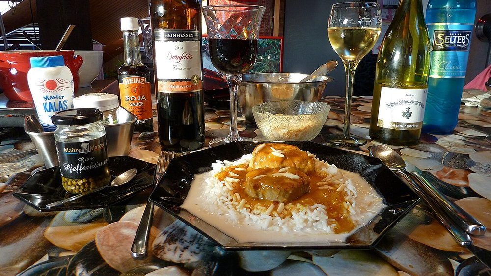

Pork Indad
sweet-sour vinegar pork lifted with dates and jaggery, the milder cousin of vindaloo

Allergens: none of the common ones
Ingredients
Quantities for 6.
- 900g shoulder, in 4cm cubes with the fat left on Pork
- 12 Kashmiri, soaked 20 minutes Dried Red Chilli
- 1/2 cup Vinegarpalm or coconut vinegar if you can get it
- 12 cloves Garlic
- 2 tbsp, roughly chopped Ginger
- 1 tsp Cumin Seeds
- 1 tsp Black Pepper
- 3cm piece Cinnamon
- 6 Cloves
- 1/2 tsp Turmeric
- 10, pitted and halved Datesindad's signature sweetness
- 2 tbsp Jaggery
- 2 large, finely sliced Onion
- 3 tbsp Neutral Oil
- to taste Salt
Cookware
stovetop, blender
Before you start
- Marinate the pork in half the ground masala with salt for at least 4 hours, or overnight refrigerated. This is where the sourness gets into the meat rather than sitting on top of it.
- Soak the dried chillies in hot water 20 minutes before grinding.
- Bring the marinated pork back to room temperature for 30 minutes before it goes in the pot, or it will seize and toughen.
Method
- Grind the soaked chillies, garlic, ginger, cumin, pepper, cinnamon, cloves and turmeric with the vinegar to a smooth thick paste. Use no water at all.Vinegar, not water. It is both the flavour of the dish and what keeps it for a week.
- Rub half the paste into the pork with 1 tsp salt and leave it to marinate as above.
- Heat the oil in a heavy pot and fry the sliced onion 12 minutes until soft and evenly gold.
- Add the remaining masala paste and cook 6-8 minutes over medium heat until it darkens and oil pools at the sides.
- Add the marinated pork and turn it over high heat 8 minutes until sealed on all sides and coated in masala.
- Pour in 300ml hot water, bring to a boil, then drop to a bare simmer, cover and cook 50 minutes until a knife slides into the meat without resistance.Barely a bubble breaking the surface. A hard boil makes pork shoulder stringy instead of soft.
- Add the dates and jaggery and simmer uncovered 12 minutes more, until the dates have softened and the gravy is glossy and thick.
- Taste and balance: indad should land sweet, then sour, then warm with pepper. Add vinegar or jaggery a teaspoon at a time.Adjust while it is hot but taste after a minute's cooling. Heat flattens sourness on the tongue.
- Rest off the heat 20 minutes before serving, with sannas or crusty pav.
Storage
Improves for 3-4 days refrigerated; the vinegar preserves it and day two is genuinely better. Reheat gently, adding hot water if it has tightened. Freezes 3 months.
Nutrition Medium estimate
| Per serving285 g | Per 100 g | |
|---|---|---|
| Calories | 447+ kcal | 158+ kcal |
| Protein | 34.1+ g | 12+ g |
| Carbohydrate | 43.6+ g | 15+ g |
| of which sugars | 33.9+ g | 12+ g |
| Fibre | 4.1+ g | 1+ g |
| Fat | 15.7+ g | 6+ g |
| of which saturated | 3.7+ g | 1+ g |
| of which unsaturated | 10.8+ g | 4+ g |
The + means ingredients given to taste rather than by weight are counted as zero, so the true figure is a little higher than shown. Worked out from the listed quantities. Some of the ingredient list is given to taste rather than by weight, so treat these as a guide. Ingredients given to taste rather than by weight are counted as zero, so the real figure is a little higher than this. The + says so. Some ingredients have no exact match in the nutrient database and use the nearest equivalent: jaggery. Estimated from raw ingredients using USDA FoodData Central. Cooking changes are not modelled, and added salt is excluded, so sodium is not given.
Recipe v1.0.0, last updated 2026-07-31. Curated for Khaana and kept under version control.